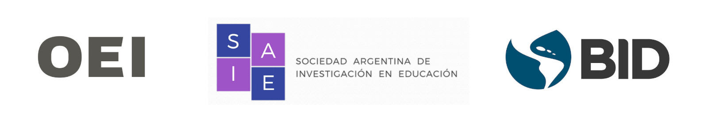

Diálogo federal · Información educativa
Mesas de diálogo para el fortalecimiento de los SIGED en Argentina
Un espacio de intercambio para ampliar los usos de la información en el planeamiento, la gestión y el acompañamiento de las trayectorias educativas.
Explorar el mapa federalConsultar publicacionesUn espacio de encuentro
Diálogo para fortalecer la gestión educativa
La Organización de Estados Iberoamericanos (OEI), el Banco Interamericano de Desarrollo (BID) y la Sociedad Argentina de Investigadores/as en Educación (SAIE) vienen desarrollando desde el año 2023 mesas de diálogo e intercambio para promover el fortalecimiento y ampliar los usos de los Sistemas de Información para la Gestión Educativa (SIGED) en la Argentina y proponer temas de agenda en torno a diferentes dimensiones relativas a la producción y a los usos de información vinculados al planeamiento, la gestión y el monitoreo de acciones, políticas, programas e intervenciones institucionales.
Comité organizador
Tamara Vinacur y Silvina Alegre (BID)Sebastián Fuentes y Juan Suasnábar (SAIE)
Nancy Montes (OEI)
Delia González y Lilia Toranzos(UNIPE)
Martín Scasso (Fundación Quántitas, Consultor UNESCO Santiago)
Julián Falcone (SEDUC-UEICEE)
Participantes de las Mesas de diálogo
Objetivos
Una mirada federal
Los SIGED en Argentina
Un SIGED (sistema de gestión e información educativa) es un conjunto de procesos clave de gestión educativa que permite diseñar, registrar, procesar y difundir información estratégica en línea de manera integral, respaldado por una infraestructura legal, institucional y tecnológica (1). La generación de registros digitales nominalizados ofrece información detallada sobre instituciones, docentes y estudiantes, lo cual resulta esencial para el diagnóstico, la planificación y la implementación de políticas educativas. Además, estos sistemas de información fortalecen la gobernanza del sistema educativo, promueven la rendición de cuentas y permiten la implementación de Sistemas de Alerta Temprana, facilitando la identificación y la organización de estrategias de apoyo a estudiantes con situaciones que ponen en riesgo la continuidad, la terminalidad y el buen desempeño escolar.
(1) Arias Ortiz, E.; Eusebio, J.; Pérez Alfaro, M.; Vásquez, M., y Zoido, P. (2021). Los Sistemas de Información y Gestión Educativa (SIGED) de América Latina y el Caribe: la ruta hacia la transformación digital de la gestión educativa. Washington, DC: Banco Interamericano de Desarrollo.
La clasificación reproduce la información de la versión anterior. La fecha de referencia puede consultarse en cada ficha cuando está disponible.
Ejes para el intercambio
Dimensiones de los SIGED
Preguntas que organizan la conversación sobre las condiciones, los desarrollos y los usos de los sistemas de información.
Encuentros y conversaciones
Mesas de diálogo
La agenda de encuentros y sus documentos de trabajo.
Biblioteca de consulta
Producción de conocimiento
Producciones que acompañan el diseño y la implementación de los SIGED y los Sistemas de Alerta Temprana.
Herramientas para la gestión educativa
Banco de Indicadores e Índices Educativos
El BIIE-SIGED reúne indicadores e índices cuyo cálculo tiene como fuente los registros nominalizados de estudiantes disponibles en Argentina, si bien pueden extrapolarse o referirse a otros países que cuenten con captaciones de información iguales o equivalentes.
Se organiza según grupos que ordenan las temáticas y los procesos que pretende caracterizar, incluyendo las definiciones y fórmulas propuestas para reconstruir estados y eventos a lo largo del tiempo.
El desarrollo no incluye aún datos o valores asociados sino definiciones conceptuales y metodológicas.
Consultar el banco de indicadoresUna agenda compartida
¿Cómo se pueden fortalecer los SIGED?
El potencial transformador de los Sistemas de Información y Gestión Educativa (SIGED)
El valor de los SIGED radica en su capacidad para generar de manera continua información precisa, accesible y procesable, que puede guiar desde la asignación de recursos hasta la identificación temprana de estudiantes en riesgo de desvinculación. A través de los SIGED, los gobiernos y las instituciones educativas pueden diseñar y evaluar políticas más efectivas, mejorar la gestión escolar y garantizar que las decisiones se tomen de manera informada, orientadas hacia el fortalecimiento de las trayectorias educativas.Los sistemas de información pueden ser implementados de manera incremental, comenzando con las herramientas y recursos disponibles e ir fortaleciéndose en el camino. Lo esencial es iniciar, incorporando progresivamente nuevas dimensiones y funcionalidades, como la digitalización de los registros, la integración de datos multisectoriales o el uso de alertas tempranas para la protección de las trayectorias educativas.
El proceso de fortalecimiento de un SIGED es continuo y su éxito depende tanto de la capacidad para adaptarse a los cambios tecnológicos y sociales como de la voluntad de mejorar la gestión educativa con base en datos. En este sentido, avanzar con lo disponible permite no solo mejorar la eficiencia del sistema desde el inicio sino también generar aprendizajes que faciliten la incorporación de nuevas herramientas y enfoques, maximizando el impacto de las políticas educativas en beneficio de todos los y las estudiantes.
A continuación, se presentan algunas prioridades a considerar en el fortalecimiento de los SIGED en Argentina:
Seguir en contacto
La conversación continúa
Recibí información, publicaciones y avances de la agenda de las Mesas de Fortalecimiento de los SIGED en Argentina.